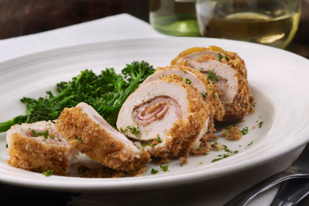

Stuffed Chicken Breast

Description
this stuffed chicken breast is a juicy, flavorful main dish that's elegant enough
for a dinner party but simple enough for a weeknight meal.
Tender chicken breasts are filled with a creamy
mix of spinach, garlic, and cheese, then baked to golden
perfection. Every bite is packed with flavor, making this a
delicious and satisfying choice for any occasion.
For the chicken:
- 2 large boneless, skinless chicken breast
- 1 tbsp olive oil
- Salt and pepper
- 1 tsp paprika (optional, for color)
For the filling:
- 1 cup fresh spinach (or 1/2 cup frozen, thawed and drained)
- 1/2 cup cream cheese, softened
- 1/4 shredded mozzarella cheese
- 2 tbsp grated Parmesan cheese
- 1 garlic clove, minced
- Salt and pepper to taste
Optional additions
- Sun-dried tomatoes (chopped)
- Cooked bacon bits
- Fresh herbs (like parsley or basil)
Step-by-Step Process
Preheat the oven
- Preheat your oven to 375 F (190 C).
Prepare the filling:
- In a bowl, mix cream cheese, mozzarella, parmesan, garlic, spinach, salt, and pepper
- Add any optional ingredients you like (e.g., sun dried tomatoes or herbs).
Cut and stuff the chicken:
- Pat chicken breast dry and season both sides with salt, pepper, and paprika.
- Carefully cut a horizontal pocket in the thickest part of each breast without cutting all the way through
- Stuff each pocket with the cheese-spinach mixture. Use toothpicks to secure if needed
Sear (optional for extra flavor):
- Heat olive oil in a oven-safe skillet over medium heat.
- Sear each side of the stuffed chicken for 2-3 minutes until golden.
Bake:
- Transfer the skillet to the oven (or place chicken in a baking dish).
- Bake for 20-25 minutes, or until the chicken reaches an internal temperature of 165 F (74 C).
Rest and serve:
- Let the chicken rest for 5 minutes before slicing.
- Serve with roasted vegetables, mashed potatoes, or a fresh salad.
Home Page